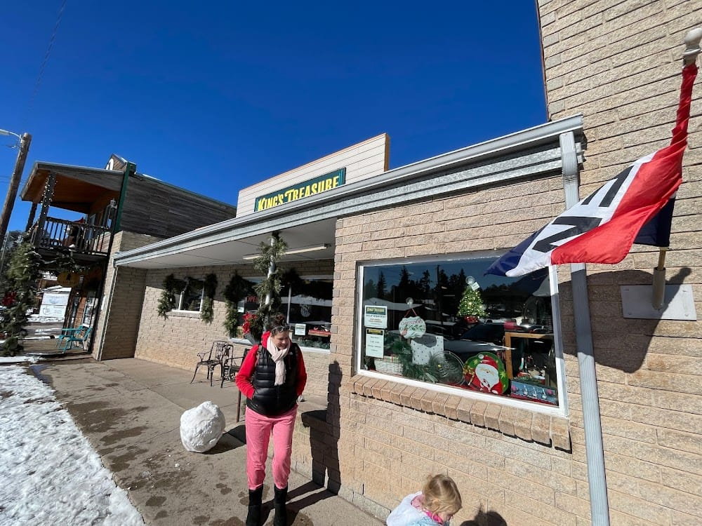
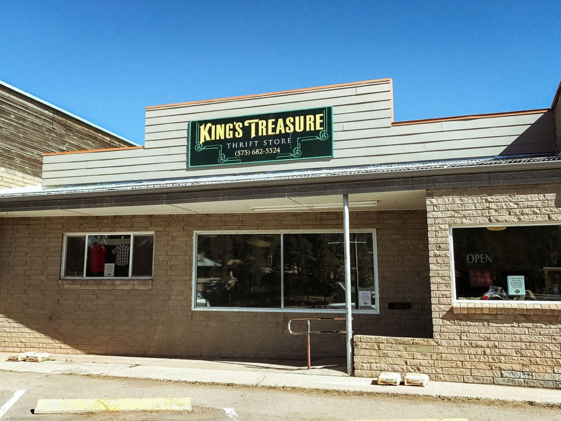

Clothing
Secondhand clothing across sizes and seasons — rotates with donations.
- Men's / women's / kids'
- Seasonal rotation
- Thrift-price points
The reason most thrift shoppers come — walk the racks, take the lap.
Cloudcroft's mission-linked thrift stop — secondhand clothing, home décor, jewelry, furniture, and kitchenware on Burro Avenue. One of two Southern New Mexico Outreach stores; proceeds support Pregnancy Resources Plus in Alamogordo.
A Burro Avenue thrift stop where the inventory rotates, the prices stay low, and the proceeds go to a specific mission in Alamogordo — three things most Cloudcroft retail can't claim at once.
The shop's own site leads with clothing, home décor, jewelry, furniture, and kitchenware. Thrift turnover is real — specific items rotate, so don't drive up expecting a particular piece. Pickup and delivery services exist for the Alamogordo store; Cloudcroft-side availability isn't confirmed.
"Whatever turns up — a jacket, a dish, a jewelry piece. Thrift shopping is rummage-speed, not list-speed. Take the lap, see what you find."
Whatever the rack offers
"A piece of small furniture, a kitchen item, or a home-décor pickup. Thrift prices for a cabin resupply — the category the other Cloudcroft shops don't cover."
Cabin / rental household
"Anything, as long as you're spending. The proceeds route to Pregnancy Resources Plus in Alamogordo — the purchase doubles as a donation."
Your money to the mission
Monday through Saturday, 10 AM – 5 PM. Closed Sunday. The official site is the strongest source on this shop's hours; third-party directories are less reliable. Still, seasonal-town retail shifts — call before a timed visit if it matters.
On the main Burro Avenue walkable strip at the 200 block — near Aspen & Ivy, Mountain Comforts, and the downtown courtyard cluster. Easy pairing with a full Burro stroll.
202 Burro Ave
Cloudcroft, NM 88317
On the main walkable Burro strip in the 200 block. Parking on-street along Burro.
Phone: (575) 682-5524
Web: kingstreasure.org
Operated by Southern New Mexico Outreach. Two stores (Cloudcroft + Alamogordo). Proceeds support Pregnancy Resources Plus of Alamogordo.
What this shop handles well, and when to aim somewhere else on Burro.
Storefront and shop-front exterior — the thrift store on Burro.


Mon–Sat 10 AM – 5 PM per the official site, closed Sunday. Donation drop-offs happen during open hours. Specific donation-hour rules and holiday-hour changes aren't separately posted; call (575) 682-5524 ahead of a large drop-off.
King's Treasure is one of two stores operated by Southern New Mexico Outreach — this one on Burro Ave in Cloudcroft and a second store in Alamogordo. Proceeds support Pregnancy Resources Plus of Alamogordo. The dollars have a specific destination.
Thrift turnover is real. Furniture inventory in particular rotates constantly. Don't drive up expecting a specific piece; drive up expecting the thrift-shop experience of finding what's currently there.
Pickup and delivery services exist on the Alamogordo side; whether the same services are equally available from the Cloudcroft store isn't confirmed. Ask on the call. Specific accessibility details for 202 Burro aren't documented.
"King's Treasure is the Burro Avenue shop with the most honest pitch: thrift turnover, low prices, and a mission that knows exactly where the dollars go. It's the right answer for cabin resupply, the right answer for an on-mountain donation drop, and the right answer for spending with intent. Take the lap; keep expectations thrift-shaped."
Three peer shops on the same walkable strip — or jump back to the full shopping guide for all 24.